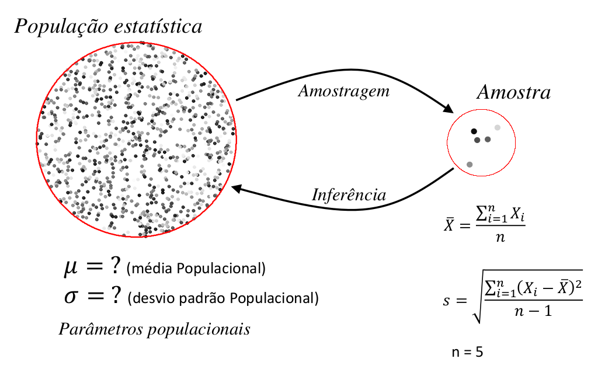
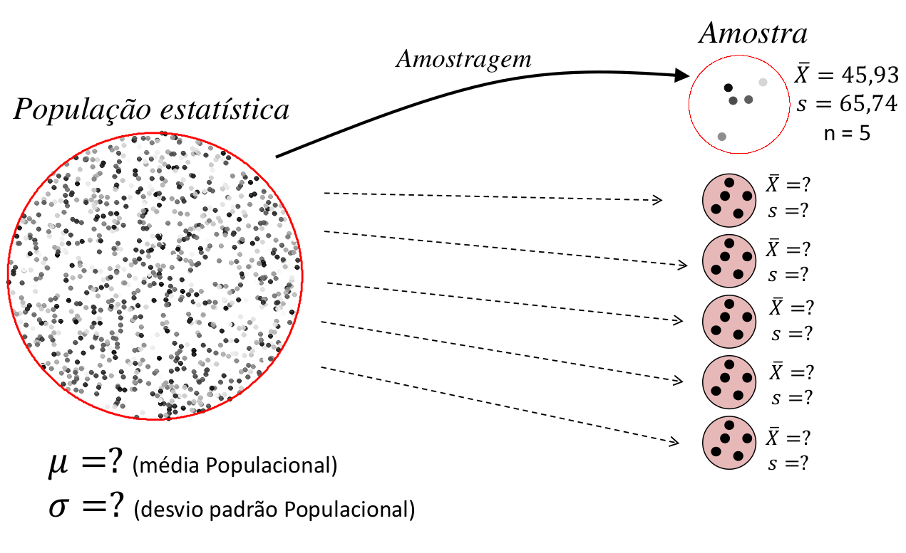
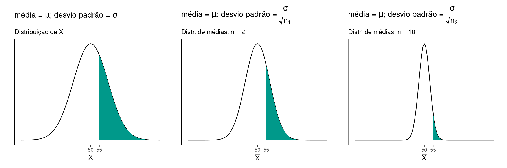
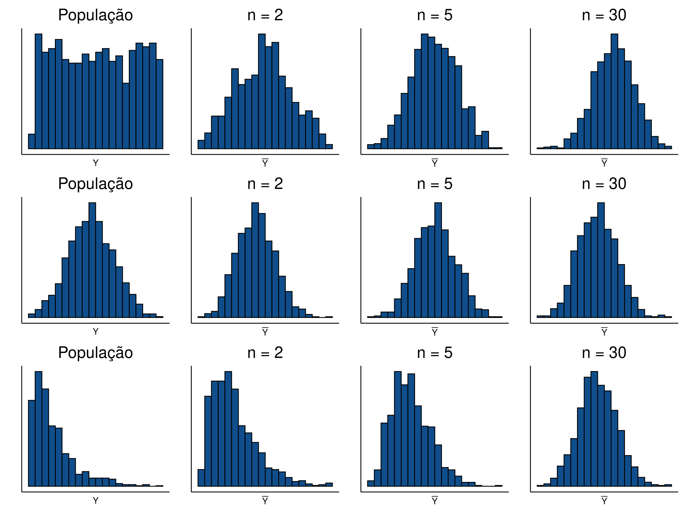
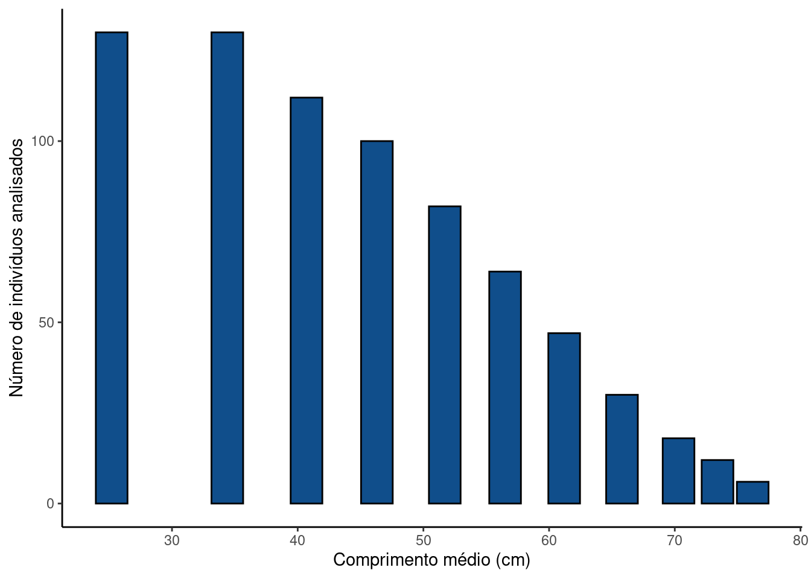

library(tidyverse)
library(patchwork)4 Distribuição das médias amostrais
Pacotes, funções e base de dados utilizadas no capítulo
Pacotes:
Funções: tcl_simetry.r
source("scripts/tcl_simetry.R")5 Distribuição das médias amostrais
Vamos retomar algumas ideias discutidas no Capítulo 1 e Capítulo 2, quando apresentamos a distribuição das médias amostrais e o ciclo de amostragem \(\Rightarrow\) inferência estatística. Ao amostrar uma população estatística por meio de um experimento, seremos capazes de calcular estatísticas descritivas desta população. A média amostral \(\overline{X}\) é uma destas estimativas, mas a mesma ideia vale para qualquer outra estatística \(\theta\).

Neste processo, o resultado de um experimento pode ser visto como uma observação particular de uma população de experimentos que podem ser reproduzidos sob as mesmas condições. A estimativa obtida deste experimento é portanto, somente uma entre uma população de estimativas que o experimento pode gerar. A inferência estatística consiste em entender o que podemos esperar como resultados possíveis desta população de experimentos.

5.1 Teorema Central do Limite
No Capítulo 2 apresentamos a distribuição de médias como uma distribuição normal, centrada na média populacional \(\mu\) e com desvio padrão igual a \(\sigma_{\mu} = \frac{\sigma}{\sqrt{n}}\). Este resultado é previsto pelo Teorema Central do Limite (TCL) que fornece um modelo teórico para o comportamento esperado da média amostral de um experimento.
Teorema Central do Limite: definição
Seja uma população estatística com média \(\mu\) e desvio padrão \(\sigma\). A distribuição das médias amostrais desta população tenderá a apresentar uma distribuição normal de probabilidades com média \(\mu\) e desvio padrão \(\frac{\sigma}{\sqrt(n)}\) à medida que o tamanho amostral \(n\) aumenta, ainda que a distribuição das observações originais não possua uma distribuição normal.
Segundo o TCL, as médias amostrais \(\overline{X}\) de um experimento distribuem-se como:
\[\overline{X} \sim \mathcal{N}(\mu_{\overline{X}},\,\sigma^{2}_{\overline{X}})\]
em que \(\mu_{\overline{X}} = \mu\) \(\sigma^{2}_{\overline{X}} = \frac{\sigma^2}{n}\)
Note que a variância de \(\overline{X}\) depende do tamanho amostral \(n\). Isto justifica o que será discutido no tópico Introdução à suficiência amostral do Capítulo 5.
5.1.1 Probabilidades na amostra original e na distribuição de médias
Seja uma variável \(X\) qualquer com \(\mu = 50\) e \(\sigma = 10\). As figuras abaixo comparam as probabilidades acima de \(x_1 = 55\) para as observações originais e para as distribuições de médias amostrais de tamanho \(n_1 = 2\) e \(n_2 = 10\).

Note que existe uma probabilidade razoável de que uma determinada observação em \(X\) esteja acima de \(55\), \(P(X \leq 55) = 0.309\). No entando se tomarmos ao acaso uma amostra de tamanho \(n_1 = 2\), a probabilidade de que a média destas duas amostras esteja acima de \(55\) diminui para \(P(\overline{X} \leq 55) = 0.24\). Se tormarmos uma amostra ainda maior (\(n_2 = 10\)), a probabilidade se reduz ainda mais para \(P(\overline{X} \leq 55) = 0.057\).
Vemos portanto, como mencionado no Capítulo 2, que a precisão de um experimento aumenta à medida que aumentamos o tamanho amostral, pois para amostras grandes, a probabilidade de obtermos um \(\overline{X}\) distante de \(\mu\) torna-se cada vez menor.
5.1.2 Distribuições não-normais
O TCL é válido inclusive para distribuições não-normais. Isto torna a distribuição normal uma das mais importantes em inferência estatística, pois ainda que o resultado de um experimento particular seja descrito por qualquer outro modelo de probabilidades, as médias das amostras deste experimento seguirão uma distribuição normal, à medida que \(n\) aumenta. Isto justifica muitos dos processos de análise e inferência estatística que serão descritos nos capítulos posteriores.
A fig-tcl-non-normal, simula a distribuição de médias amostrais para variáveis com diferentes distribuições de probabiidades e tamanhos crescentes de \(n\). Podemos observar que independente do formato da distribuição original, a distribuição das médias amostrais tende à normalidade. O padrão normal aparece mais rápido se a distribuição original é simétrica. Ainda que para populações estatísticas com distribuições assimétricas, seja necessário um tamanho amostral maior para que se alcance a normalidade, a figura mostra que a partir de \(n = 30\) todas as distribuições parecem se aproximar do que seria esperado um modelo normal.

5.2 Exercícios resolvidos:
5.2.1 Tamanho médio de robalos no mercado de peixes
Em 2014 no estuário do rio Itanhaém - SP foi pescado o “maior robalo já encontrado” (G1 Santos). O peixe tinha \(133\) cm e \(27,8\) kg . Em 2018 em Bertioga, também no litoral de SP: “Robalo ‘gigante’ quebra recordes e vira atração” (G1 Santos) pesando \(33\) kg. Finalmente, em “uma das salas da Colônia de Pesca Z2 de Atafona” RJ está uma imagem de um robalo de \(28\) kg capturado muitas décadas atrás (Ambiente Cult)
Estas capturas viram notícias pois são inusitadas. Dados de desembarque sugerem que a distribuição de tamanho de robalos comumente capturados está muito abaixo destes limites (Figura 5.6) (Ximenes-Carvalho 2006) ( Acesse aqui o trabalho completo).
Code
TabelaI <- data.frame(
compmedio = c(25.2, 34.4, 40.7, 46.3, 51.7, 56.5, 61.2, 65.8, 70.3, 73.4, 76.2),
N = c(130,130,112,100,82,64,47,30,18,12,6)
)
tabelaI_plt <- ggplot(data = TabelaI, mapping = aes(x = compmedio, y = N)) +
geom_col(fill = 'dodgerblue4', color = 'black') +
labs(y = 'Número de indivíduos analisados',
x = 'Comprimento médio (cm)') +
theme_classic()Code
tabelaI_plt
A distribuição de tamanhos na Figura 5.6 é altamente assimétrica e claramente não-normal. Um dos motivos para este forte grau de assimetria deve-se ao limite inferior de captura, pois a captura e comercialização de animais muito pequenos é proibida.
Suponha que o comprimento de robalos (\(L\)) disponíveis para compra tenha média \(\mu = 44.1\) e desvio padrão \(\sigma = 13.4\). Você compra 10 robalos escolhidos ao acaso dos que estão disponíveis. Qual a probabilidade de que:
- O tamanho médio de uma compra esteja acima de \(52,4\) cm, isto é \(P(\overline{L} > 52,4)\)?
- Em \(95\%\) das vezes que fizer a compra, determine o intervalo simétrico que conterá o tamanho médio dos robalos selecionados, isto é \(P(a \le \overline{L} \le b) = 0,95\)
- Responda novamente aos itens i. e ii. no caso de sua compra constar de \(4\) robalos.
RESOLUÇÃO
Ainda que a distribuição original claramente não siga uma distribuição normal, podemos utilizar o TCL para estimarmos as probabilidades de obter uma média amostral \(\overline{X}\) a determinada distância de \(\mu\). Para isto, no entanto devemos recordar que o desvio padrão das médias amostrais será dado por: \(\sigma_{\overline{X}} = \frac{\sigma}{\sqrt{n}}\).
i. \(P(\overline{L} > 52,4)\)
Com base no TCL, uma amostra de \(n = 10\) terá média normalmente distribuída com parâmetros \(\mu\) e \(\sigma_{\mu} = \frac{\sigma}{\sqrt{10}}\). Podemos assim, realizar a transformação \(Z\) como segue:
\(Z_{\overline{L}} = \frac{\overline{L} - \mu}{\sigma_{\mu}} = \frac{\overline{L} - \mu}{\frac{\sigma}{\sqrt{n}}}\)
\(Z_{\overline{L}} = \frac{52,4 - 44.1}{\frac{13.4}{\sqrt{10}}} = 1.96\)
Note que o denomidador aqui é diferente do que fizemos no Capítulo 3, pois aqui estamos falando da distribuição das médias amostrais \(\overline{L}\) e não nas observações individuais \(L\).
Se buscarmos na Tabela Z, veremos que a área da distribuição normal padronizada abaixo de \(1.96\) é de \(0,975\). Consequentemente \(P(\overline{L} > 52,4) = 1 - 0,975 = 0,025\)
ii. \(P(a \le \overline{L} \le b) = 0,95\)
Se o intervalo é simétrico e contém \(0,95\) das observações, restam \(0,025\) em cada uma das caudas. Vimos no item anterior que \(z = 1,96\) que delimita \(0,025\) da cauda superior. Portanto os limites aqui serão dados por: \(a = -1.96\) e \(b = 1.96\). Na distribuição original estes limites resultarão em:
\(-1,96 = \frac{a - 44.1}{\frac{13.4}{\sqrt{10}}}:: a = 44.1 -1,96 \frac{13.4}{\sqrt{10}} = 35.8\) cm
e
\(+1,96 = \frac{b - 44.1}{\frac{13.4}{\sqrt{10}}}:: b = 44.1 +1,96 \frac{13.4}{\sqrt{10}} = 52.4\) cm
Reduzindo para \(n = 4\) robalos
Aqui você deve repetir exatamente os passos de i. e ii. substituindo \(n = 10\) por \(n = 4\).
RESOLUÇÃO no R:
- \(P(\overline{L} > 52,4)\)
pnorm(52.4,
mean = 44.1,
sd = 13.4/sqrt(10),
lower.tail = FALSE)[1] 0.02507255- \(P(a \le \overline{L} \le b) = 0,95\)
a <- qnorm((1-0.95)/2,
mean = 44.1,
sd = 13.4/sqrt(10),
lower.tail = TRUE)
a[1] 35.79475b <- qnorm((1-0.95)/2,
mean = 44.1,
sd = 13.4/sqrt(10),
lower.tail = FALSE)
b[1] 52.40525- Repita os comandos acima para \(n = 4\)
Atenção
Neste exercício aplicamos o que aprendemos sobre o TCL para estimar probabilidades de eventos, assumindo a distribuição normal das médias amostaris. É importante resaltar, no entanto, que a distribuição altamente assimétrica do comprimento dos robalos (Figura 5.6) e um tamanho amostral reduzido (\(n = 10\) e \(n = 4\)) dificilmente justificariam o uso do TCL como vemos na Figura 5.4.
5.3 Exercícios propostos
Leia dos tópicos 10.6 Estatísticas e Parâmetros a 10.8 Distribuição Amostral da Média em (Bussab and Morettin 2010) (pag. 271 a 281) e faça os exercícios 7 a 10 da página 281.
Vídeo-aulas
Bussab, Wilton de O., and Pedro A. Morettin. 2010. Estatśitica Básica. 6a ed. Saraiva.
Ximenes-Carvalho, Maria Odete. 2006. “Idade e Crescimento Do Robalo-Flecha, Centropomus Undecimalis (BLOCH, 1792) e Robalo-Peva, Centropomus Parallelus (POEY, 1860) (OSTEICHTHYES: CENTROPOMIDAE), No Sudeste Do Brasil.” PhD thesis, Instituto de Ciências do Mar, Universidade Federal do Ceará.